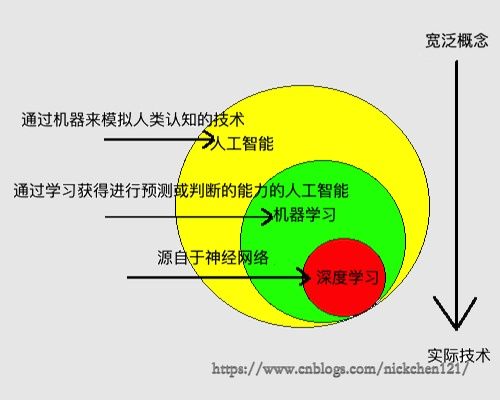

人工智能，机器学习，深度学习的关系：

人工智能的核心是机器学习，机器学习的本质是算法。机器学习就是把无序的数据转换为有用的信息。英文定义：A computer program is said to learn from experience E with respect to some class of tasks T and performance measure P, if its performance at tasks in T, as measured by P, improves with experience E.
术语，概念
如果我们工作一段时候后，打算去找中介买房。中介会询问你对房子的需求，例如：大小、布局、朝向、地理位置。而这四点在机器学习中称之为特征feature。
之后你说出了你需求的房子具体数据——大小：100m2、布局：三室一厅一卫、朝向：朝南、地理位置：上海市徐汇区，然后中介会去他们的搜索系统中找到这些特征输入对应的值，之后该系统会列出与你想要的房子相似的房源，并打印一份带有价格的表格给你。
| 大小 | 布局 | 朝向 | 地理位置 | 价格 |
|---|---|---|---|---|
| 100m2 | 三室一厅一卫 | 朝北 | 上海市徐汇区 | 500w |
| 105m2 | 三室两厅一卫 | 朝南 | 上海市闵行区 | 502w |
| 100m2 | 三室一厅一卫 | 朝南 | 上海市黄浦区 | 505w |
| …… | …… | …… | …… | …… |
Table 1 中的每一行都是有具体特征的房子，在机器学习中就是一个个具有相关特征的样本sample。如果我们搜集更多的数据，并对这些数据进行清洗，将所有相关数据整理成互斥的三部分，也就是内容都不重合的三部分：
- 训练集train set：训练集用于训练机器学习算法的数据样本集合
- 验证集validation set：验证集用来做模型选择（model selection），即做模型的最终优化及确定的数据集。因为训练时还有超参数，如训练轮数，50轮与100轮训练出的模型很可能不一样，相当于模拟考试，可以一次一次调整。
- 测试集test set：测试集用于最终模型的性能，相当于只有一次的高考。测试集得到模型性能才是与其他论文的模型性能比较的依据。
包含这三部分的文件就是数据集dataset，现在很多领域都有别人制作的公开的数据集，可以去下载。Table 1 就可以是一个包含多个训练样本training sample的训练集，每个训练样本中包含4种特征、一个标记label：本例中标记是房价，是机器学习算法的预测结果。
特征和标记没有明确的划分，随问题不同，A问题的特征可能是B问题的标记，B问题的标记可能是A问题的特征。
机器学习的目标是使学习得到的模型能很好地适用于“新样本”，适用于“新样本”的能力称为“泛化”能力。
深度学习（deep learning）：通过组合低层属性特征形成更加抽象的高层属性特征。如学英语的时候，“Nick handsome”这12个英文单词是低层属性特征，而“Nick handsome”的语义则是抽象的高层属性特征。深度学习的概念源于人工神经网络的研究，它属于机器学习中的某一个方法，其中深度学习中的“深度”是指神经网络的层数。
前向传播：计算出输出值的过程。
反向传播：通过计算输出层结果与真实值之间的偏差来进行逐层调节参数。例如:对于单层感知机 \(y(x)=wx+b\)，均方误差函数为 \(J(w)=min||y'-(wx+b)||\) 算出均方误差函数的梯度 \(\nabla_wJ(w)\)，则权重更新 \(w'=w-\eta\nabla_wJ(w)\)，其中 \(\eta\) 为学习率。（拟合函数不一定是线性的，所以是非线性规划的无约束问题）
机器学习分类
机器学习依据数据集数据格式的不同，可以划分成监督学习和无监督学习；依据算法模式的不同可以划分为监督学习、无监督学习、半监督学习和强化学习。
监督学习（supervised learning）：输入已知信息的样本得到一个模型，去预测未来新数据。监督学习分为回归问题与分类问题。如果模型的输出为连续值，如股票价格[2.2,2.4,2.6,3…]类型的数据称为连续值，则该监督学习问题称作回归问题。如果模型的输出为离散值，如[阿猫,阿狗,…]或{0,1}（输出不是0就是1），则该监督学习问题称作分类问题。
无监督学习：（unsupervised learning）：通过输入一组未知标记的样本，可以通过聚类（clustering）的方法，将数据分成多个簇（cluster）。无监督学习的流程：输入一组未知类别的样本，输出分成多个簇的一组样本。
半监督学习（semi-supervised learning）：监督学习与无监督学习相结合的一种学习方法。监督学习和无监督学习的区别主要在于数据集中的数据是否具有标记，当某个问题中的数据集中的数据具有标记时，我们称之为监督学习；反之，我们称之为无监督学习。目前，由于无监督学习算法的不稳定性，它一般作为中间算法，工业上使用较多的是监督学习算法。但是目前工业上累积较多的是不带标记的数据，因此无监督学习在未来将是一个技术突破的重点目标。为了处理这批不带标记的数据，也有科学家提出了半监督学习，它可以简单的理解为监督学习和无监督学习的综合运用，即使用带有标记的数据也使用不带有标记的数据。
强化学习（reinforcement learning）：学习系统从环境到行为映射的学习，目标是使智能体获得最大的奖励，即强化信号最大。强化学习类似于无监督学习，但是又不同于无监督学习，强化学习针对的是无标记的数据，但是在强化学习算法对无标记的数据进行处理的同时会给出一个特定的目标，如果算法的处理结果偏离目标，则会给出惩罚；反之，给出奖励，而该算法的目标就是为了获得最大奖励。强化学习一般用于无人驾驶。